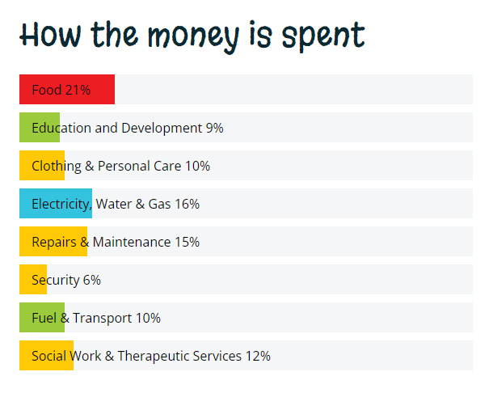

The Johannesburg Children’s Home, established in 1892, is a well-managed institution with a long history of exemplary service to the children of our city.
The Johannesburg Children’s Home is a registered Non-Profit Organisation (NPO 001-034) and Public Benefit Organisation (PBO 18/11/13/1111) which provides a safe refuge for up to 64 children of all races who have been found in need of care by the Children’s Court.
We care for Orphans and Vulnerable Children (OVC) found to be disadvantaged through physical, sexual or emotional abuse, severe neglect or abandonment, some are affected or infected by HIV/AIDS. At JCH they start a new life, living communally in cottages, under the loving eyes of trained Child and Youth Care Workers.
Although we receive a State subsidy for each child, this covers only 11% of actual costs. If not for the generosity of the people of Johannesburg and further afield, this vital work could not be sustained.
The Johannesburg Children’s Home is guided by an active and dedicated Board of Governors, who give unstintingly of their time and expertise.
We are indebted to the following current members of the Board for their wise counsel, management advice and financial acumen:
Mr. S. Mdluli (Managing Director)
Mr. B. Westcott (Acting Chairperson)
Mrs. A. van der Colff (Treasurer)
Ms. D. Ramjettan
Mr. T. Mokoena
Ms. S. Niven
Mrs. N. Cara
Mr. C. Visser
We subscribe to the Independent Code of Governance for Non-Profit Organisations in South Africa, which consists of a set of principles, values and responsibilities intended to guide and inform the way organisations are managed and conduct their affairs.